Знакомство
Иллюстрации GPT Image появляются до первой тренировки. В повторяющейся работе внимание остаётся на данных.
Приглашение
Общий блокнот связывает тренера и клиента. Название gymGO пока рабочее.
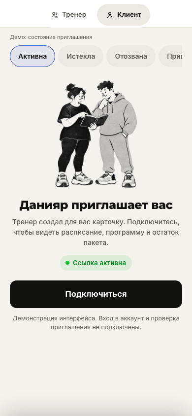
Первый план
Пустое состояние объясняет следующий шаг; иллюстрация поддерживает знакомство.
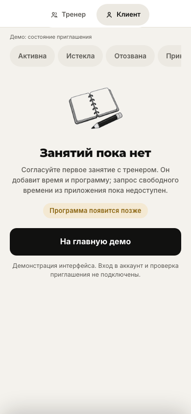
Работа тренера
От расписания к записи подхода и результатам. Главный критерий — быстро записать факт и вернуться к клиенту.
Сегодня
Время отделено от имени; статусы помогают выбрать следующее действие.
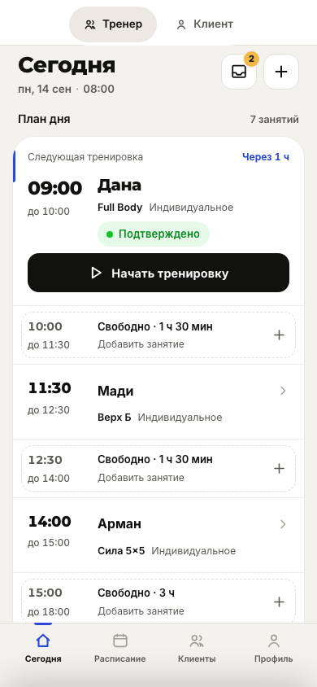
Журнал тренировки
Показанный прошлый результат записывается одним нажатием; карандаш открывает изменение. Посещение и списание — отдельно.
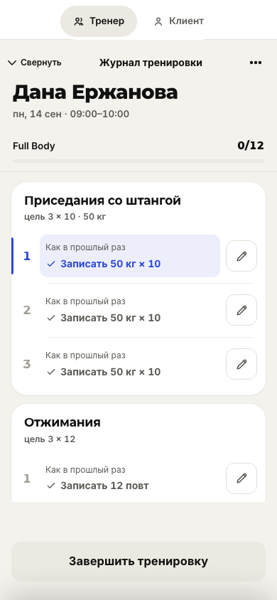
Один подход
Контекст клиента и упражнения остаётся рядом с полями и действием записи.
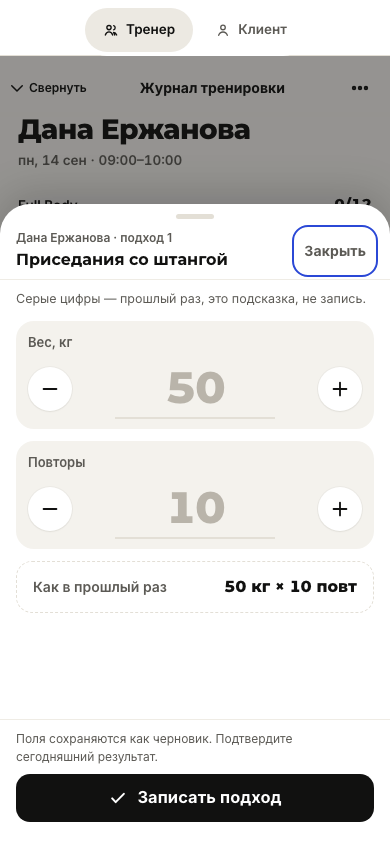
Мини-группа
Активный участник виден явно; черновики и факты у каждого свои.
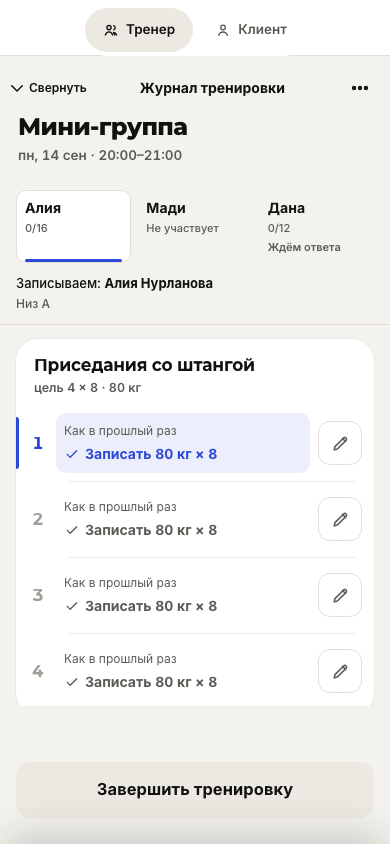
Результаты
Частичный результат остаётся частичным. Завершение не дописывает отсутствующие подходы.
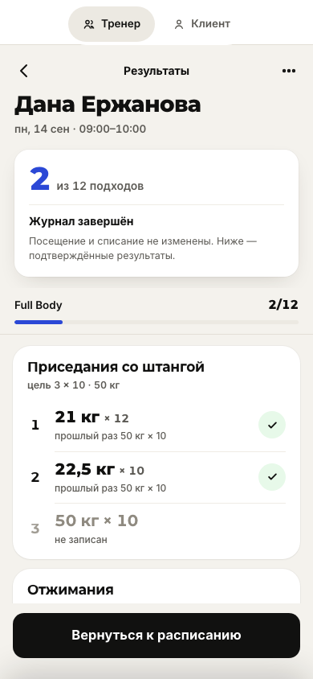
У клиента
Следующее занятие, программа и история используют одну типографику и спокойную иерархию.
Ближайшее занятие
Время — главный ориентир. Действующее и предложенное время переноса показаны раздельно.
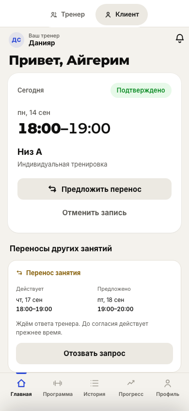
Программа
Полные названия упражнений и назначенная программа; отсутствие плана не скрывается подстановкой.
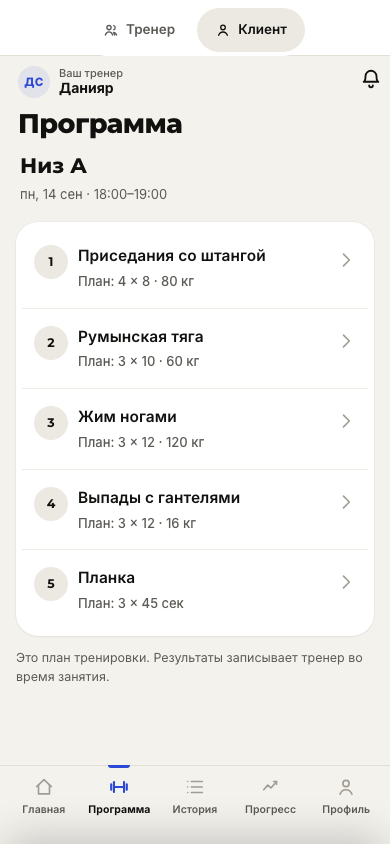
История
Запись в расписании, посещение и операция пакета — разные факты.
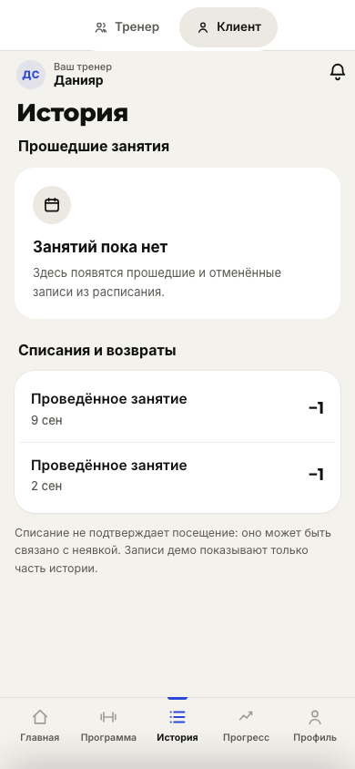
Прогресс
Значения и даты читаются явно. Пока это демонстрационная история, без новых журналов.
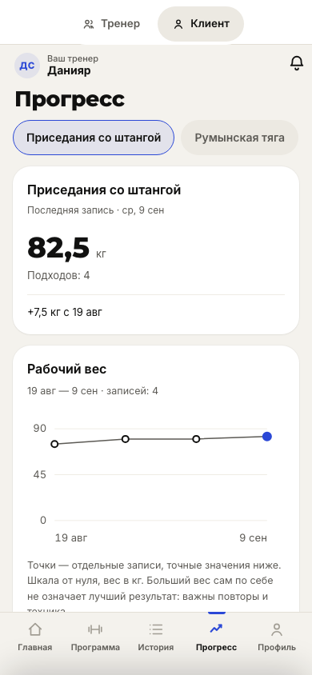
Профиль
Личные данные и остаток пакета видны сразу. Баланс остаётся данными демосеанса.
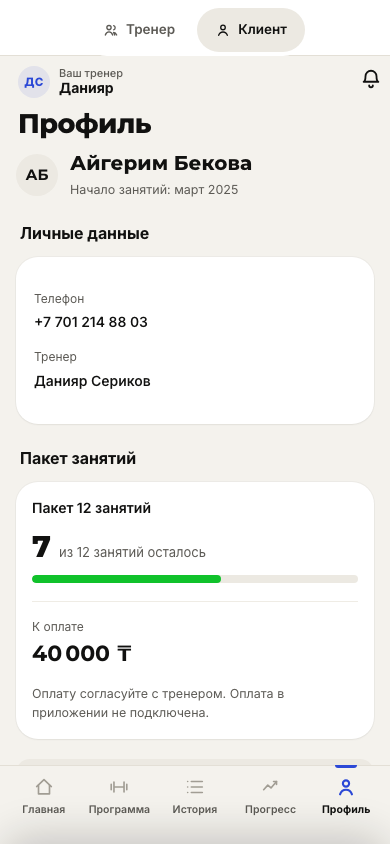
Дополнительные состояния
Только текущая версия: для этих состояний старые снимки не создавались. История снята в демовремя 20:30, пустые экраны — в сценарии без данных.
История к вечеру
Дата и время на полях реестра. Прошедшее занятие само по себе не означает посещение.
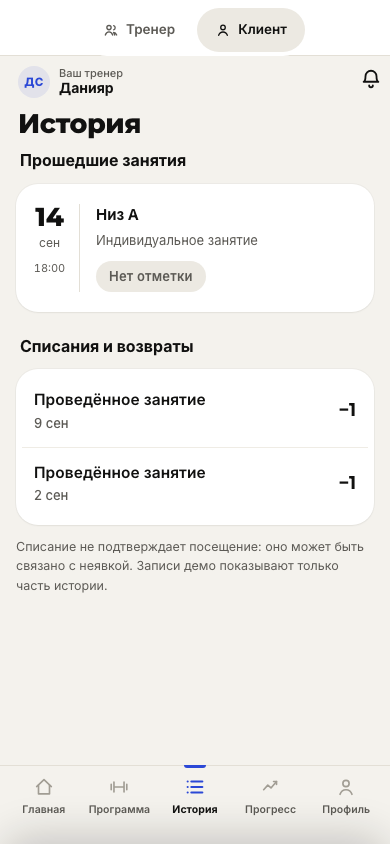
Пока нет программы
Готовый рисунок GPT Image поддерживает начало работы; переход к расписанию остаётся явным.
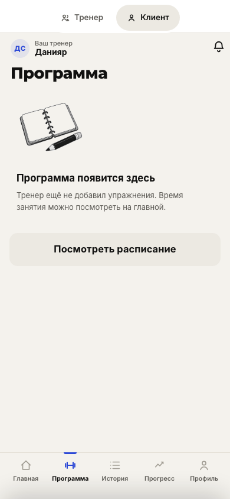
Пока нет результатов
Пустой блокнот вместо выдуманного графика. Посещения по-прежнему учитываются отдельно.
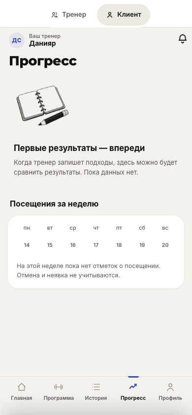
Что решить по этому обзору
- Подходит ли характер «Чернильного блокнота»?Сравните температуру фона, синий акцент и новый таб-бар. В журнале оцените различие предложения «Как в прошлый раз» и записанного факта.
- Подходит ли характер иллюстраций GPT Image?Общий блокнот и взаимодействие людей — в приглашении и первом плане. Выбор касается стиля, а не добавления картинок во все разделы.
- Оставляем ли gymGO рабочим названием?Текущее написание не является утверждённым логотипом. Его можно отложить и отдельно принять UX-направление.
Для обратной связи достаточно назвать экран и конкретное изменение. Решение о нативном стеке не требуется для обсуждения этих экранов.